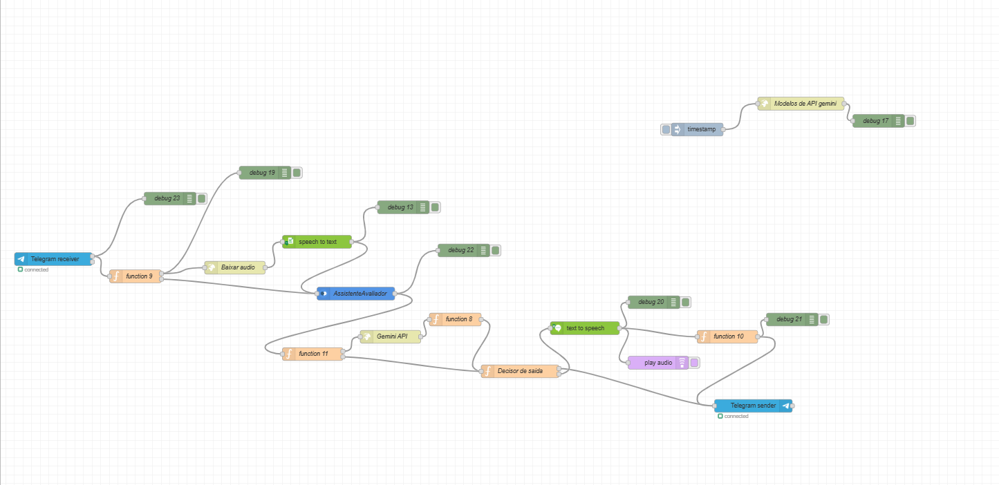
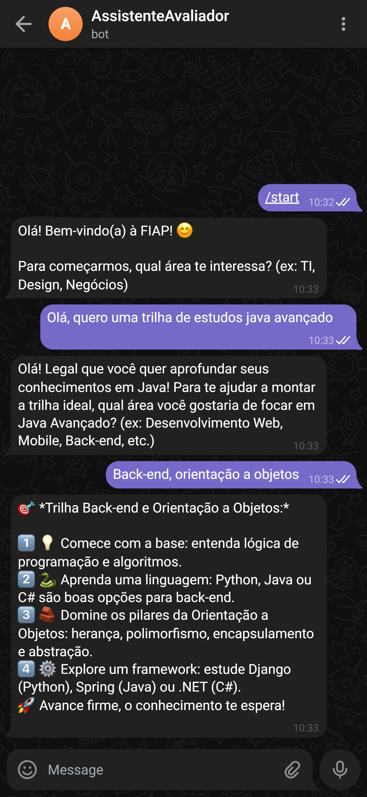
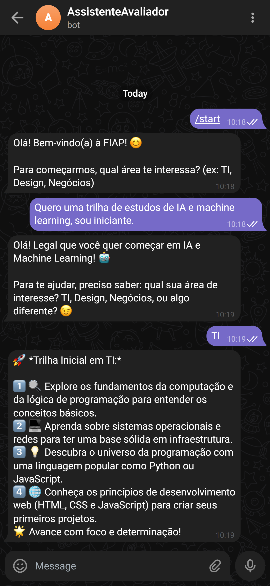

🤖 Testar no Telegram
*O bot depende de servidor local.
Veja aqui exemplos reais da conversa.
Como funciona a Tecnologia?
1
Entrada de Dados
O usuário envia suas skills e interesses via Telegram ou Web.
2
Processamento (Node-RED)
Nossa API orquestra os dados e consulta modelos de IA Generativa (Gemini).
3
Trilha Gerada
O Watson Assistant devolve um plano de carreira detalhado e personalizado.
Arquitetura Inteligente
Utilizamos uma arquitetura robusta baseada em microsserviços. O fluxo no Node-RED integra a API do Telegram com a inteligência do Google Gemini e IBM Watson para garantir respostas precisas em tempo real.
- ✅ Integração IBM Watson Assistant
- ✅ API Google Gemini (Generative AI)
- ✅ Automação via Node-RED
- ✅ Interface via Telegram Bot

Fluxo real da nossa aplicação no Node-REDO Assistente em Ação

